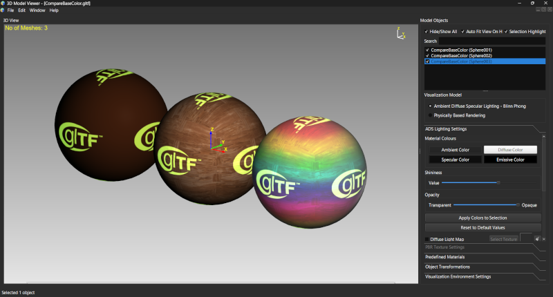
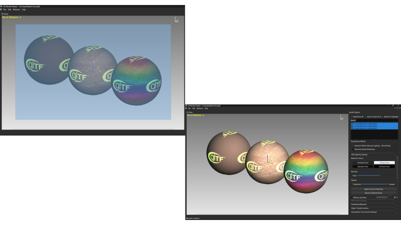
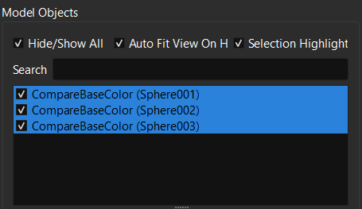
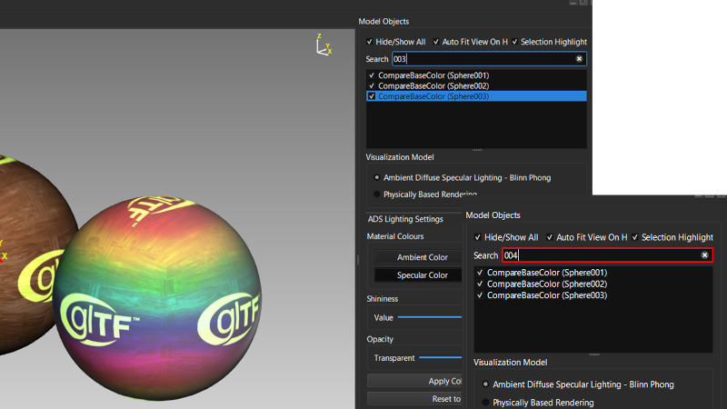
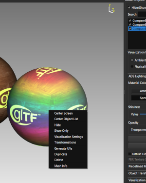

Lesson 4 of 14
Lesson 4: Selecting Objects
Introduction
Selection is fundamental to working with models in ModelViewer. You need to select objects before you can manipulate, hide, or modify them.
Single Selection
The most basic selection method:
Step 1: Click an Object
Simply Left Click on any object in the 3D viewport to select it.
Step 2: Visual Feedback
Selected objects are highlighted with a glowing color in the viewport and their entry in the object list is also highlighted.

Object selected showing glowing highlight color and selection in object list
Clicking on an already selected object will deselect it (toggle selection).
Multiple Selection - Rubber Band
Select multiple objects at once:
Step 1: Click and Drag
Left Click and hold, then drag to create a selection rectangle (rubber band).
Step 2: Encompass Objects
Any object that falls within the rectangle will be selected.
Step 3: Release
Release the mouse button to confirm the selection.

Rubber band selection rectangle being dragged across multiple objects
The rubber band selection is great for selecting groups of objects quickly.
Selecting from Object List
An alternative selection method using the side panel:
Step 1: Locate Object
Find the object in the Object List panel on the left side.
Step 2: Click Name
Click on the object's name to select it. The viewport will update to show the selection.

Object list showing selected item highlightedStep 3: Multi-Select in List
Hold Ctrl and click multiple items to add to selection.
Hold Shift and click to select a range of items.
Hold Shift and click to select a range of items.
Search and Select
For scenes with many objects:
Step 1: Use Search Box
Type in the search box above the object list to filter objects by name.
Step 2: Objects Appear/Hide
Only objects matching your search will be highlighted in the list. If no match is found the search box will show a red silhouette
Step 3: Select from Filtered List
Filtered objects will automatically be selected from the filtered results.

Search box with text and filtered object list showing matching results
Clear the search box to show all objects again.
Deselecting
There are several ways to clear selection:
| Method | Result |
|---|---|
| Click on selected object | Deselects that object |
| Click empty space in viewport | Selected objects stay selected |
| Press Esc | Deselects all objects |
| Click different object | Adds that object to existing list of seleced objects |
Selection Highlighting
Control how selection is displayed:
Step 1: Toggle Highlighting
Use the 'Selection Highlight' checkbox in the left panel to turn selection highlighting on or off.
Even with highlighting off, you can still see which objects are selected in the object list.
This helps to eliminate the selection visual to visualize the real-time change of visuals of the selected objects in case of color, material, or texture application.
Working with Selected Objects
Once objects are selected, you can:
- Hide/Show them (Space key)
- Delete them (Delete key)
- Transform them (Move, Rotate, Scale)
- Change their materials and colors
- Apply textures
- Duplicate them
- Center the view on them
Context Menu Actions
Right-click on selected objects for quick actions:

Context menu showing options for selected objectsPractice Exercise
Try this exercise:
- Import or open a model with multiple parts
- Practice clicking individual objects to select them
- Try rubber band selection to select multiple objects at once
- Use Ctrl+Click to add objects to your selection one by one
- Select objects from the object list
- Use the search box to find specific objects by name
- Practice deselecting using different methods
- Right-click on a selection to see available actions